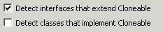
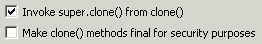
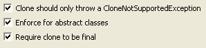
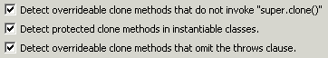
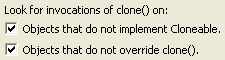

Audit - Rules - Clone UsageDescriptionThis group contains audit rules that check for problems with the use of the cloning mechanism (the interface Cloneable and the clone method). |
| Rules: |
Summary
It is best to avoid creating subtypes of Cloneable.
Description
The Cloneable interface serves no purpose other than to modify the behavior of Object's clone method. There's no reason for interfaces to extend it. Classes rarely benefit from implementing it; there are better ways to copy objects than by cloning.
Example
The following class declaration would be flagged as a violation:
public class Customer implements Cloneable

Summary
Every implementation of clone() should invoke super.clone() and every clone() method should be final.
Description
This audit rule looks for implementations of the method clone() that do not invoke the inherited clone() method. It also looks for clone() methods that are not declared final.
Example
The following declaration of the clone method would be flagged as being a violation, both because of the lack of an invocation of the inherited clone method and because it is not declared 'final'.
public Object clone()
{
return new Employee(getName());
}

Summary
Invoking Object's clone() method on an instance that does not implement the Cloneable interface results in the exception CloneNotSupportedException being thrown.
Description
The programmer probably intended the class to be cloneable when implementing the clone() method. Invoking Object's clone() method on an instance that does not implement the Cloneable interface results in the exception CloneNotSupportedException being thrown.
Security Implications
This means the code will not work as intended, resulting in errors and possibly unpredictable behavior thus compromising security.
Example
The following code would be flagged as a violation because it does not implement Cloneable while implementing clone method:
public class SomeBean {
public Object clone() throws CloneNotSupportedException {
...
}
}
Summary
Classes that implement the Cloneable interface should define a clone() method.
Description
This audit rule looks classes that implement the Cloneable interface and do not define clone() method.
Security Implications
It is most essential for library vendors or for mobile code. The clone method is mechanism that allows the creation of objects, and it might be undesirable for users to be able to inherit this class and tamper with the behavior of this method.
Example
The following class would be flagged as a violation because it does not define a clone() method
class MyClass implements Cloneable
{
...
}
Summary
When an Object is cloned, Object data is copied and returned, because of this secure classes must be conscious of Cloneable.
Description
This audit rule aims to prevent adversaries from accessing data by extending classes and creating clone methods. Specifically, this rule flags non-anonymous classes that:
(1) do not implement Cloneable (so that the rule doesn't flag appropriate uses of Cloneable utilities),
(2) are non-final (final classes can't be extended),
(3) do not inherit a clone method (since inserting a clone method would be unnecessarily repetitive),
(4) and do not override clone():
public Object clone() throws CloneNotSupportedException;
and may enforce the following as the body of the clone method:
{
throws java.lang.CloneNotSupportedException("Type not cloneable");
}
without, or with, a String input description.
Note: Even though classes that do not implement the Cloneable interface throw CloneNotSupportedException, adversaries are not prevented from extending a class, implementing the Cloneable interface, and then calling clone() to retrieve a copy of an instance of the class.
For more audit rule options concerning clone(), see Clone Method Usage and Override Clone Judiciously under Semantic Errors.
Security Implications
Classes that do not override clone() risk allowing a malicious user to subclass and override the clone method allowing them to gain access to data not intended by the application.
Example
The classes A, B and C below will not be flagged, but D will be.
class A {
public Object clone() {
throw new java.lang.CloneNotSupportedException();
}
}
class B extends A {}
final class C{}
class D {}

Summary
Be careful when defining clone. It is complex and not fully specified.
Description
This audit rule helps to ensure that clone is used properly. It checks the following items:
1. Either the class is final or the clone method calls super.clone().
2. Either the class is abstract or the clone method is declared public.
3. Either the class is final or the clone method declaration has the proper throws clause.

Summary
Find invocations of clone() that will throw an exception.
Description
This audit rule checks for invocations of the clone() method on objects that do not either implement the Cloneable interface or override the default implementation of clone() in Object.
Example
The following invocation would be flagged as being a violation if the object is not Cloneable:
object.clone();
